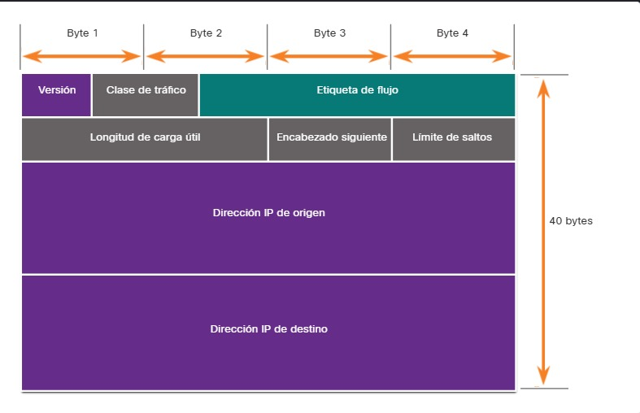

5.2.1 ¿Qué son los protocolos?
Realizar simplemente la conexión física por cable o inalámbrica entre los terminales no es suficiente para habilitar la comunicación. Para que se produzca la comunicación, los dispositivos deben saber “cómo” comunicarse. La comunicación, ya sea cara a cara o por una red, está regida por reglas denominadas protocolos. Estos protocolos son específicos del tipo de método de comunicación en cuestión.
Por ejemplo, considere a dos personas que se comunican cara a cara. Antes de comunicarse, deben acordar cómo hacerlo. Si en la comunicación se utiliza la voz, primero deben acordar el idioma. A continuación, cuando tienen un mensaje que compartir, deben poder dar formato a ese mensaje de una manera que sea comprensible. Por ejemplo, si alguien utiliza el idioma español, pero la estructura de las oraciones es deficiente, el mensaje se puede malinterpretar fácilmente.
Del mismo modo, los protocolos de red especifican muchas características de la comunicación de red, como se muestra en la figura.

5.2.2 Protocolos de red
Los protocolos de red ofrecen los medios para que las computadoras se comuniquen en las redes. Los protocolos de red determinan la codificación, el formato, la encapsulación, el tamaño, la distribución y las opciones de entrega del mensaje. Los protocolos de red definen un formato y un conjunto de reglas comunes para intercambiar mensajes entre dispositivos. Algunos de los protocolos de red más comunes son Hypertext Transfer Protocol (HTTP), el protocolo de control de transmisión (TCP) y el protocolo de Internet (IP). Como analista de ciberseguridad, debe estar muy familiarizado con la estructura de los datos del protocolo y cómo funcionan los protocolos en las comunicaciones de red.
Nota: IP en este curso se refiere tanto a los protocolos de IPv4 como a los de IPv6. IPv6 es la versión más reciente de IP y, con el tiempo, sustituirá al protocolo IPv4 más común.
Estructura del mensaje

Uso compartido de rutas

Uso compartido de la información

Administración de sesión

5.2.3 La suite de protocolos TCP/IP
Hoy en día, el conjunto de protocolos TCP/IP incluye muchos protocolos y continúa evolucionando para admitir nuevos servicios. Algunos de los más populares se muestran en la figura.

Capa de aplicación
Sistema de nombres
Configuración de host
Correo electrónico
Transferencia de Archivos
- FTP - Protocolo de Transferencia de Archivos. Establece las reglas que permiten a un usuario en un host acceder y transferir archivos hacia y desde otro host a través de una red. FTP Es un protocolo confiable de entrega de archivos, orientado a la conexión y con acuse de recibo.
- SFTP - SSH Protocolo de Transferencia de Archivos Como una extensión al protocolo Shell seguro (SSH), el SFTP se puede utilizar para establecer una sesión segura de transferencia de archivos, en el que el archivo transferido está cifrado. SSH es un método para el inicio de sesión remoto seguro que se utiliza normalmente para acceder a la línea de comandos de un dispositivo.
- TFTP - Protocolo de Transferencia de Archivos Trivial Un protocolo de transferencia de archivos simple y sin conexión con la entrega de archivos sin reconocimiento y el mejor esfuerzo posible. Utiliza menos sobrecarga que FTP.
- HTTP - Hypertext Transfer Protocol. Un Conjunto de reglas para intercambiar texto, imágenes gráficas, sonido, video y otros archivos multimedia en la World Wide Web.
- HTTPS - HTTP seguro. Una forma segura de HTTP que cifra los datos que se intercambian a través de la World Wide Web.
- REST - Transferencia de Estado Representacional. Servicio web que utiliza interfaces de programación de aplicaciones (API) y solicitudes HTTP para crear aplicaciones web.
- TCP - Protocolo de Control de Transmisión. Permite la comunicación confiable entre procesos que se ejecutan en hosts independientes y tiene transmisiones fiables y con acuse de recibo que confirman la entrega exitosa.
- UDP - Protocolo de Datagramas de Usuario Habilita un proceso que se ejecuta en un host para enviar paquetes a un proceso que se ejecuta en otro host Sin embargo, UDP No confirma la transmisión correcta de datagramas
- IPv4 - Protocolo de Internet versión 4. Recibe segmentos de mensajes de la capa de transporte, empaqueta mensajes en paquetes y dirige paquetes para entrega end-to-end a través de una red. IPv4 utiliza una dirección de 32 bits.
- IPv6 - IP versión 6. Similar a IPv4 pero usa una dirección de 128 bits.
- NAT - Traducción de Direcciones de Red Traduce las direcciones IPv4 de una red privada en direcciones IPv4 públicas globalmente únicas.
- ICMPv4 - Protocolo de Control de Mensajes de Internet Proporciona comentarios desde un host de destino a un host de origen con respecto a los errores en la entrega de paquetes
- ICMPv6 - ICMP para IPv6. Funcionalidad similar a ICMPv4 pero se utiliza para paquetes IPv6.
- ICMPv6 ND - Protocolo de Descubrimiento de Vecinos versión 6 Incluye cuatro mensajes de protocolo que se utilizan para la resolución de direcciones y la detección de direcciones duplicadas.
- OSPF - Abrir el Camino más Corto Primero. Protocolo de enrutamiento de estado de vínculo que utiliza un diseño jerárquico basado en áreas. OSPF s un protocolo de routing interior de estándar abierto.
- EIGRP - EIGRP Protocolo de Enrutamiento de Puerta de enlace Interior Mejorado. Es un protocolo de routing abierto desarrollado por Cisco, utiliza una métrica compuesta en función del ancho de banda, la demora, la carga y la confiabilidad.
- BGP - Protocolo de Puerta de Enlace de Frontera Un protocolo de enrutamiento de puerta de enlace exterior estándar abierto utilizado entre los proveedores de servicios de Internet (ISP). BGP también se utiliza entre los ISP y sus clientes privados más grandes para intercambiar información de enrutamiento.
-
ARP - Protocolo de Resolución de Direcciones Proporciona la asignación de direcciones dinámicas entre una dirección IP y una dirección de hardware.
Nota: Puede ver otro estado de documentación que ARP opera en la capa de Internet (OSI Capa 3). Sin embargo, en este curso declaramos que ARP opera en la capa de acceso a la red (OSI Capa 2) porque su objetivo principal es descubrir la dirección MAC del destino. y una dirección de capa 2 es una dirección MAC.
- Ethernet - define las reglas para conectar y señalizar estándares de la capa de acceso a la red.
- WLAN - Wireless Local Area Network. Define las reglas para la señalización inalámbrica a través de las frecuencias de radio de 2,4 GHz y 5 GHz.
- Asistencia en el diseño de protocolos porque los protocolos que operan en una capa específica tienen información definida sobre la que actúan y una interfaz definida para las capas superiores e inferiores.
- Fomenta la competencia, ya que los productos de distintos proveedores pueden trabajar en conjunto.
- Evita que los cambios en la tecnología o en las funcionalidades de una capa afecten otras capas superiores e inferiores.
- Proporciona un lenguaje común para describir las funciones y capacidades de red.
- Modelo de Referencia de Interconexión de Sistemas Abiertos
- Modelo de referencia TCP/IP
Web y Servicio Web
Capa de transporte
Capa de transporte
Orientado a la conexión
Sin conexión
Capa de Internet
Protocolo de Internet
Mensajería
Protocolos de Routing
Capa de Acceso de Red
Capa de Acceso de Red
Resolución de dirección
Protocolos de Enlace de Datos:
5.2.4 Formato y encapsulamiento del mensaje
Cuando se envía un mensaje desde el origen hacia el destino, se debe utilizar un formato o estructura específicos. Los formatos de los mensajes dependen del tipo de mensaje y el canal que se utilice para entregar el mensaje.
Analogía
Un ejemplo común de requerir el formato correcto en las comunicaciones humanas es cuando se envía una carta. Haga clic en Reproducir en la figura para ver una animación de formato y encapsulación de una letra.
El sobre tiene la dirección del emisor y la del receptor, cada una escrita en el lugar adecuado del sobre. Si la dirección de destino y el formato no son correctos, la carta no se entrega.
El proceso que consiste en colocar un formato de mensaje (la carta) dentro de otro formato de mensaje (el sobre) se denomina encapsulamiento. La desencapsulación ocurre cuando el destinatario invierte el proceso y la carta se saca del sobre.
Red
Semejante a enviar una carta,Un mensaje que se envía a través de una red de computadoras sigue reglas de formato específicas para que pueda ser entregado y procesado.
Protocolo de Internet (IP) es un protocolo con una función similar a la del ejemplo sobre. En la figura, los campos del paquete de Protocolo de Internet versión 6 (IPv6) identifican el origen del paquete y su destino. IP es responsable de enviar un mensaje desde el origen del mensaje al destino a través de una o más redes.
Nota: Los campos del paquete IPv6 se analizan en detalle en otro módulo.

5.2.5 Tamaño del mensaje
Otra regla de comunicación es el tamaño del mensaje.
Analogía
Haga clic en Reproducir en la figura para ver una animación del tamaño del mensaje en las comunicaciones cara a cara.
Cuando las personas se comunican, los mensajes que envían, normalmente, están divididos en fragmentos más pequeños u oraciones. El tamaño de estas oraciones se limita a lo que la persona que recibe el mensaje puede procesar por vez, como se muestra en la figura. También hace que sea más fácil para el receptor leer y comprender.
Red
De manera similar, cuando se envía un mensaje largo de un host a otro a través de una red, es necesario separarlo en partes más pequeñas, como se muestra en la figura 2. Las reglas que controlan el tamaño de las partes, o tramas que se comunican a través de la red, son muy estrictas. También pueden ser diferentes, de acuerdo con el canal utilizado. Las tramas que son demasiado largas o demasiado cortas no se entregan.
Las restricciones de tamaño de las tramas requieren que el host de origen divida un mensaje largo en fragmentos individuales que cumplan los requisitos de tamaño mínimo y máximo. El mensaje largo se enviará en tramas independientes, cada trama contendrá una parte del mensaje original. Cada trama también tendrá su propia información de direccionamiento. En el host receptor, las partes individuales del mensaje se vuelven a unir para reconstruir el mensaje original.
5.2.6 Sincronización del mensaje
El tiempo de los mensajes también es muy importante en las comunicaciones de red. El tiempo de los mensajes incluye lo siguiente:
Control de flujo - Este es el proceso de gestión de la velocidad de transmisión de datos. La sincronización también afecta la cantidad de información que se puede enviar y la velocidad con la que puede entregarse. Por ejemplo, Si una persona habla demasiado rápido, la otra persona tendrá dificultades para escuchar y comprender el mensaje. En la comunicación de red, existen protocolos de red utilizados por los dispositivos de origen y destino para negociar y administrar el flujo de información.
Tiempo de espera de respuesta (Response Timeout) - Si una persona hace una pregunta y no escucha una respuesta antes de un tiempo aceptable, la persona supone que no habrá ninguna respuesta y reacciona en consecuencia. La persona puede repetir la pregunta o puede continuar la conversación. Los hosts de las redes tienen reglas que especifican cuánto tiempo deben esperar una respuesta y qué deben hacer si se agota el tiempo de espera para la respuesta.
Métodos de acceso - Determina en qué momento alguien puede enviar un mensaje. Haga clic en Reproducir en la figura para ver una animación de dos personas hablando al mismo tiempo, luego se produce una "colisión de información" y es necesario que las dos retrocedan y comiencen de nuevo. Del mismo modo, cuando un dispositivo desea transmitir en una LAN inalámbrica, es necesario que la tarjeta de interfaz de red (NIC) WLAN determine si el medio inalámbrico está disponible.
5.2.7 Unidifusión, multidifusión y difusión
Un mensaje se puede entregar de diferentes maneras. En algunos casos, una persona desea comunicar información a un solo individuo. Otras veces, esa persona puede necesitar enviar información a un grupo de personas simultáneamente o, incluso, a todas las personas de un área.
Los hosts en una red utilizan opciones de entrega similares para comunicarse. Estos métodos de comunicación se denominan unicast, multicast y broadcast
Unidifusión
Una opción de entrega de uno a uno se denomina unicast, que significa que el mensaje tiene solo un destinatario.
Multidifusión
Si un host necesita enviar mensajes utilizando una opción de uno a varios, se denomina multicast.
Difusión
Si es necesario que todos los hosts de la red reciban el mensaje a la vez, se utiliza el método de broadcast. La broadcast representa una opción de entrega de mensaje de uno a todos.
5.2.8 Beneficios del uso de un modelo en capas
En realidad, no puede ver los paquetes reales viajar a través de una red real de la misma manera que puede ver cómo se ensamblan los componentes de un automóvil en una línea de ensamblaje. por lo tanto, es útil tener una forma de pensar acerca de una red para que puedas imaginar lo que está sucediendo. Un modelo es útil en estas situaciones.
Conceptos complejos, como el funcionamiento de una red, pueden ser difíciles de explicar y comprender. Por esta razón, un modelo en capas se utiliza para modularizar las operaciones de una red en capas manejables.
Los beneficios por el uso de un modelo en capas para describir protocolos de red y operaciones incluyen lo siguiente:.
Como se muestra en la figura, hay dos modelos en capas que se utilizan para describir las operaciones de red:

5.2.9 El Modelo de Referencia OSI
El modelo de referencia OSI proporciona una amplia lista de funciones y servicios que se pueden presentar en cada capa. Este tipo de modelo es coherente con todos los tipos de servicios y protocolos de red al describir qué es lo que se debe hacer en una capa determinada, pero sin regir la forma en que se debe lograr.
También describe la interacción de cada capa con las capas directamente por encima y por debajo de él. Los protocolos TCP/IP que se analizan en este curso se estructuran en torno a los modelos OSI y TCP/IP. La tabla muestra detalles sobre cada capa del modelo OSI. La funcionalidad de cada capa y la relación entre ellas será más evidente a medida que avance en el curso y que se brinden más detalles acerca de los protocolos.
| Capa del modelo OSI | Descripción |
|---|---|
| 7 - Aplicació | La capa de aplicación contiene protocolos utilizados para comunicaciones proceso a proceso. |
| 6 - Presentación | La capa de presentación proporciona una representación común de los datos transferidos entre los servicios de la capa de aplicación. |
| 5 - Sesión | La capa de sesión proporciona servicios a la capa de presentación para organizar su diálogo y administrar el intercambio de datos. |
| 4 - Transporte | La capa de transporte define los servicios para segmentar, transferir y reensamblar los datos para las comunicaciones individuales entre terminales. |
| 3 - Red | La capa de red proporciona servicios para intercambiar los datos individuales en la red entre terminales identificados. |
| 2 - Enlacede Datos | protocolos de la capa de enlace de datos describen métodos para intercambiar tramas de datos entre dispositivos a través de un medio común. |
| 1 - Física | Los protocolos de la capa física describen los medios mecánicos, eléctricos, funcionales y de procedimiento para activar, mantener y desactivar conexiones físicas para una transmisión de bits hacia y desde un dispositivo de red. |
Nota: tenga en cuenta que, mientras las capas del modelo TCP/IP se mencionan solo por el nombre, las siete capas del modelo OSI se mencionan con frecuencia por número y no por nombre. Por ejemplo, la capa física se conoce como Capa 1 del modelo OSI, la capa de enlace de datos es la Capa 2, y así sucesivamente.
5.2.10 Modelo de Protocolo TCP/IP
El modelo de protocolo TCP/IP para comunicaciones de internetwork se creó a principios de la década de los setenta y se conoce con el nombre de modelo de Internet. Este tipo de modelo coincide con precisión con la estructura de una suite de protocolos determinada. El modelo TCP/IP es un protocolo modelo porque describe las funciones que ocurren en cada capa de protocolos dentro de una suite de TCP/IP. TCP/IP también es un ejemplo de un modelo de referencia. La tabla muestra detalles sobre cada capa del modelo OSI.
| Capa del modelo TCP/IP | Descripción |
|---|---|
| 4 - Aplicación | Representa datos para el usuario más el control de codificación y de diálogo. |
| 3 - Transporte | Admite la comunicación entre distintos dispositivos a través de diversas redes. |
| 2 - Internet | Determina el mejor camino a través de una red. |
| 1 - Acceso a la Red | Controla los dispositivos del hardware y los medios que forman la red. |